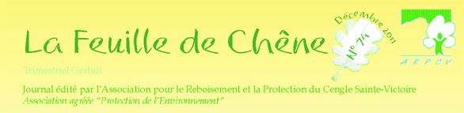
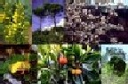

Sélection
d'articles
|

|

Botanique
|
 Le
frêne à fleurs
Le
frêne à fleurs
L'érable de Montpellier
Sorbiers et alisiers
Le chêne pubescent
Les arbres et les champignons |

Faune
|
La taxonomie
Les oiseaux...
Le geai des chênes
L'aigle de Bonelli ou l'aigle des garrigues
Les poissons présents dans la Cause |

Histoire
|
Le feu de la Saint Jean
Histoire du château du Tholonet
Roques-Hautes et les oeufs de dinosaures
Un peu de géologie : la montagne Sainte-Victoire |

Reboisement
|
10000 arbres pour l'an 2000
Les glands prégermés de chêne pubescent
Reboisement en région méditerranéenne
Rompre le cycle du feu
Quelques conseils pour des semis de glands de chêne
Bilan
des plantations de l'ARPCV (Oct 2005)
Bilan
des semis de glands de chênes blancs et des plantations (Oct 2005)
Semis
de chênes à la volée: lieux (P. Champroux Fév.2007)
Formalisation
des comptages de plantations (DED P.Champroux)
Journées de nettoyage non-stop
|

et aussi ...
|
La biodiversité
Pourquoi éduquer à l'environnement
L'état de la forêt européenne inquiète
les experts
L'homme, l'arbre et l'effet de serre
La forêt, source de vie
Forêts
d'ici et d'ailleurs
Insectes et
biodiversité
végétation
et incendies
A
propos d'écologie
|